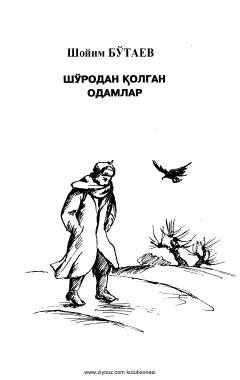

SQSho'ro tuzumi inqirozidan keyingi davr odamlari va murakkab taqdirlar haqida asar.
Sho'ro davri va undan keyingi o'tish davri insonlari hayoti, ularning ruhiy kechinmalari va ijtimoiy muammolari haqida hikoya qiluvchi asar. Kitobda oilaviy munosabatlar, ota va bola o'rtasidagi ziddiyatlar hamda davr o'zgarishlarining inson taqdiriga ta'siri yoritilgan.